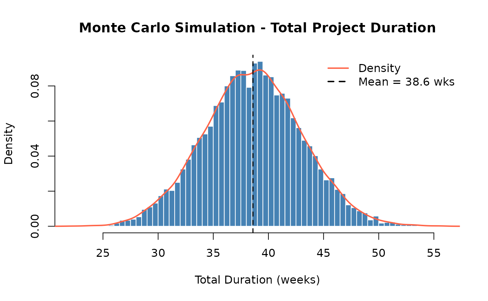
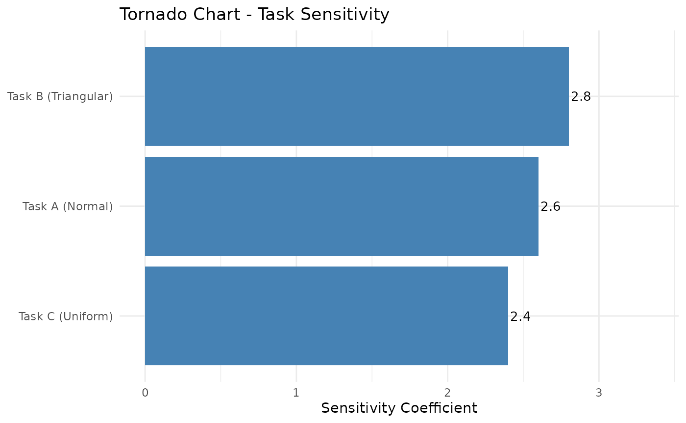

Monte Carlo (MC) simulation is a quantitative risk analysis technique that models uncertainty by running thousands of simulated project outcomes. Instead of using single-point estimates for task durations or costs, each task is described by a probability distribution. The simulation draws random samples from these distributions, sums them to get a total outcome, and repeats this thousands of times to build a full picture of possible project results.
Steps in MC Simulation
- Model Definition — Define project tasks and the variables that drive uncertainty (durations, costs).
- Assign Distributions — Choose a probability distribution for each uncertain variable (e.g., triangular for tasks with optimistic/likely/pessimistic estimates).
- Specify Correlations — If tasks are related (e.g., both affected by a shared risk), set a correlation coefficient between them.
- Run Simulation — Draw random samples and compute the total outcome for each iteration (typically 10,000+).
- Analyze Results — Summarize the distribution of totals using percentiles, mean, and variance.
Example
We model a 3-task project (in weeks). Task A follows a normal distribution, Task B has a triangular distribution (optimistic/most-likely/pessimistic), and Task C is uniformly distributed.
num_simulations <- 10000
task_distributions <- list(
list(type = "normal", mean = 10, sd = 2), # Task A
list(type = "triangular", a = 5, b = 10, c = 15), # Task B
list(type = "uniform", min = 8, max = 12) # Task C
)Correlation Matrix
Tasks often move together due to shared resources or external risks. The correlation matrix captures this. Values range from −1 (perfectly opposed) to +1 (perfectly aligned); 0 means independent. Here Tasks A and B have moderate positive correlation (0.5), meaning delays in one tend to coincide with delays in the other.
Run the Simulation
results <- mcs(num_simulations, task_distributions, correlation_matrix)Mean Total Duration: 38.6 weeks
Variance of Duration: 20.01
Std Dev of Duration: 4.47 weeks
Distribution of Outcomes
The histogram below shows all 10,000 simulated total durations. The overlaid density curve reveals the shape of the distribution.
hist_data <- results$total_distribution
hist(hist_data,
breaks = 50, freq = FALSE,
main = "Monte Carlo Simulation - Total Project Duration",
xlab = "Total Duration (weeks)", col = "steelblue", border = "white"
)
lines(density(hist_data), col = "tomato", lwd = 2)
abline(v = results$total_mean, col = "black", lty = 2, lwd = 1.5)
legend("topright",
legend = c("Density", paste0("Mean = ", round(results$total_mean, 1), " wks")),
col = c("tomato", "black"), lty = c(1, 2), lwd = 2, bty = "n"
)
Interpreting Percentiles
The mcs() function returns key percentiles of the total
distribution. These answer the question: “What duration has X%
probability of not being exceeded?”
knitr::kable(
data.frame(
Percentile = c("P5", "P50 (Median)", "P95"),
Duration = round(results$percentiles, 1),
Meaning = c(
"5% chance of finishing this fast or faster",
"Equal chance of finishing above or below this",
"95% chance of finishing by this date"
)
),
caption = "Simulation Percentiles"
)| Percentile | Duration | Meaning | |
|---|---|---|---|
| 5% | P5 | 31.2 | 5% chance of finishing this fast or faster |
| 50% | P50 (Median) | 38.6 | Equal chance of finishing above or below this |
| 95% | P95 | 46.0 | 95% chance of finishing by this date |
Contingency Analysis
Contingency is the buffer added above the base estimate to cover uncertainty. A common approach is to use the difference between the P95 (or chosen confidence level) outcome and the P50 (base estimate).
contingency_val <- contingency(results, phigh = 0.95, pbase = 0.50)
cat("Schedule contingency (P95 − P50):", round(contingency_val, 2), "weeks\n")Schedule contingency (P95 − P50): 7.4 weeks
cat(
"There is a 95% chance the project will finish within",
round(results$percentiles["95%"], 1), "weeks.\n"
)There is a 95% chance the project will finish within 46 weeks.
Interpretation: Adding 7.4 weeks of schedule contingency to the P50 estimate gives a 95% confidence of on-time delivery. Teams with low risk tolerance should use P95; those with higher tolerance might use P80.
Sensitivity Analysis
Sensitivity analysis identifies which tasks drive the most variability in the total outcome — the tasks that deserve the most management attention.
sensitivity_results <- sensitivity(task_distributions, correlation_matrix)
sens_data <- data.frame(
Task = c("Task A (Normal)", "Task B (Triangular)", "Task C (Uniform)"),
Sensitivity = sensitivity_results
)
p <- ggplot2::ggplot(
sens_data,
ggplot2::aes(x = Sensitivity, y = reorder(Task, Sensitivity))
) +
ggplot2::geom_col(fill = "steelblue") +
ggplot2::geom_text(ggplot2::aes(label = round(Sensitivity, 3)),
hjust = -0.1, size = 3.5
) +
ggplot2::labs(
title = "Tornado Chart - Task Sensitivity",
x = "Sensitivity Coefficient",
y = NULL
) +
ggplot2::xlim(0, max(sensitivity_results) * 1.2) +
ggplot2::theme_minimal()
print(p)
Interpretation: Tasks with larger bars contribute more variance to the total. Prioritize risk mitigation efforts on the highest-sensitivity task. Even a small reduction in its uncertainty can meaningfully reduce overall project risk.